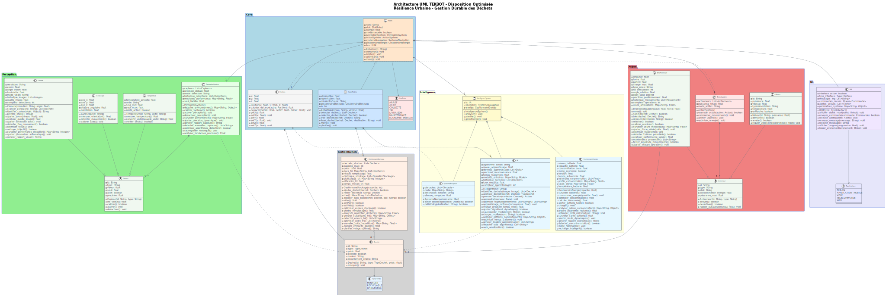

Test 1 – Création d’une classe pour un robot
Ce test porte sur la conception, l’implémentation et la documentation d’une architecture orientée objet autour d’une classe Robot principale, socle de l’ensemble des développements robotiques du projet TEKBOT. Vous trouverez ci-dessous le contexte, les objectifs, la structure du projet, les diagrammes UML, les extraits de code et la justification détaillée de chaque classe.
Sommaire
1. Contexte
La robotique occupe aujourd’hui une place centrale dans l’innovation technologique, combinant informatique, électronique et mécanique pour concevoir des systèmes intelligents capables d’interagir avec leur environnement. Ce projet s’inscrit dans le cadre du Tekbot Robotics Challenge 2025 et constitue l’épreuve d’introduction à la partie informatique du concours. Il s’agit de concevoir et d’implémenter une architecture orientée objet autour d’une classe Robot principale, qui servira de base à l’ensemble des développements robotiques à venir. La démarche vise à initier les étudiants à la modélisation logicielle, à la structuration de code et à la réflexion sur l’architecture logicielle dans un contexte robotique. L’accent est mis sur la compréhension des concepts fondamentaux de la programmation orientée objet et leur application concrète dans un projet technique.
2. Objectifs
Les objectifs sont :
- Concevoir une classe Robot respectant les principes de la programmation orientée objet : encapsulation, héritage, polymorphisme.
- Implémenter au moins deux sous-classes spécialisées dérivées de la classe Robot.
- Redéfinir la méthode
move()dans les sous-classes pour illustrer le polymorphisme. - Assurer une encapsulation correcte des attributs (attributs privés, getters/setters).
- Fournir une documentation UML claire et conforme.
3. Structure du projet
Le projet TEKBOT est organisé selon une architecture modulaire fidèle à l’arborescence réelle du dossier :
- tekbot_classes/
- __init__.py
- action/
- __init__.py
- actionneur.py
- action_system.py
- bras_robotique.py
- moteur.py
- core/
- __init__.py
- position.py
- robot.py
- robot_mobile.py
- gestion_dechets/
- __init__.py
- dechet.py
- gestionnaire_stockage.py
- intelligence/
- __init__.py
- gestionnaire_energie.py
- ia.py
- intelligence_system.py
- systeme_navigation.py
- perception/
- __init__.py
- camera.py
- capteur.py
- gyroscope.py
- perception_system.py
- temperature.py
- ui/
- __init__.py
- ihm.py
4. Programmation Orientée Objet - Implémentation Complète
Le projet TEKBOT illustre les grands principes de la POO à travers une architecture modulaire et réaliste. Voici une explication pédagogique de chaque concept, accompagnée d’exemples concrets issus du code du projet.
4.0 LE CONSTRUCTEUR – Initialisation des Objets
Définition détaillée : Le constructeur est une méthode spéciale d’une classe (en Python, __init__) qui est appelée automatiquement lors de la création d’un nouvel objet. Il permet d’initialiser les attributs de l’objet avec des valeurs de départ, garantissant que chaque instance commence dans un état cohérent.
Exemple dans le projet :
class Robot:
def __init__(self, nom: str, energie: float = 100.0):
self._nom = nom
self._energie = energie
self._etat = "prêt"
Le constructeur __init__ initialise ici le nom, l’énergie et l’état du robot dès sa création.
4.1 ENCAPSULATION – Protection et Contrôle
Définition détaillée : L’encapsulation est le principe qui consiste à regrouper les données (attributs) et les méthodes qui manipulent ces données au sein d’une même entité (la classe). Elle protège l’état interne de l’objet en rendant certains attributs privés (préfixe _ ou __), accessibles uniquement via des méthodes publiques appelées accesseurs (getters) et mutateurs (setters). Cela permet de contrôler la modification des données et d’éviter les incohérences.
Exemple dans le projet :
class Capteur(ABC):
def __init__(self, id_capteur: str, type_capteur: str):
self._id = id_capteur.strip() # Attribut privé
self._type = type_capteur.strip() # Attribut privé
self._valeur = 0.0 # Attribut privé
def get_valeur(self) -> float:
return self._valeur
def set_valeur(self, v: float):
if v >= 0:
self._valeur = v
else:
raise ValueError("Valeur invalide")
Ici, les attributs sont protégés et l’accès se fait via des méthodes dédiées, garantissant la cohérence des valeurs.
4.2 HÉRITAGE – Réutilisation et Spécialisation
Définition détaillée : L’héritage permet de créer une nouvelle classe (dite « fille » ou « dérivée ») à partir d’une classe existante (dite « mère » ou « de base »). La classe fille hérite des attributs et méthodes de la classe mère, ce qui favorise la réutilisation du code et la spécialisation. Elle peut aussi redéfinir ou étendre certains comportements.
Exemple dans le projet :
class Robot(ABC):
# Classe abstraite de base
class RobotMobile(Robot):
def __init__(self, nom: str, vitesse: float):
super().__init__(nom) # Appel du constructeur parent
self._vitesse_max = float(vitesse)
La classe RobotMobile hérite de Robot et ajoute des fonctionnalités spécifiques liées à la mobilité.
4.3 POLYMORPHISME – Flexibilité et Extensibilité
Définition détaillée : Le polymorphisme permet d’utiliser la même interface (méthode ou attribut) pour des objets de types différents. Chaque sous-classe peut redéfinir la méthode héritée pour adapter son comportement. Ainsi, le même appel de méthode peut produire des effets différents selon l’objet ciblé.
Exemple dans le projet :
class Capteur(ABC):
@abstractmethod
def lire_valeur(self):
pass
class Camera(Capteur):
def lire_valeur(self):
# Spécifique à la caméra
class Gyroscope(Capteur):
def lire_valeur(self):
# Spécifique au gyroscope
# Utilisation polymorphique
capteurs = [Camera(...), Gyroscope(...)]
for capteur in capteurs:
capteur.lire_valeur() # Appelle la méthode adaptée à chaque type
La même méthode (lire_valeur) est appelée sur chaque objet, mais le comportement dépend de la sous-classe concrète.
4.4 ABSTRACTION – Simplification et Modularité
Définition détaillée : L’abstraction consiste à définir des classes ou méthodes sans implémentation concrète (classes ou méthodes abstraites). Elle impose un contrat aux sous-classes, qui devront fournir leur propre implémentation. Cela permet de structurer le code et de clarifier les responsabilités de chaque classe.
Exemple dans le projet :
from abc import ABC, abstractmethod
class Robot(ABC):
@abstractmethod
def move(self):
pass # Doit être redéfinie dans les sous-classes
La classe Robot impose la présence de la méthode move() dans ses sous-classes, sans en donner le détail.
4.5 COMPOSITION & AGRÉGATION – Construction d’objets complexes
Définition détaillée : La composition et l’agrégation sont des relations qui permettent de construire des objets complexes à partir d’autres objets. La composition implique que l’objet composé possède et gère le cycle de vie de ses composants ; l’agrégation indique une relation plus souple, où les objets peuvent exister indépendamment.
Exemple dans le projet :
class ActionSystem:
def __init__(self):
self._actionneurs: Dict[str, Actionneur] = {}
self._moteurs: List[Moteur] = []
self._bras_robotiques: List[BrasRobotique] = []
La classe ActionSystem est composée d’objets Moteur, BrasRobotique et Actionneur : elle orchestre leur fonctionnement. De même, RobotMobile possède des sous-systèmes comme GestionnaireStockage ou IA (composition/agrégation).
5. Technologies et Outils Utilisés
5.1 Langages et Outils de Développement
- Python 3.11+ — Langage principal pour l’architecture orientée objet et la logique métier
- Pygame 2.6+ — Simulation graphique interactive et visualisation robotique
- VS Code — Environnement de développement moderne et modulaire
- Git — Gestion de versions et collaboration
5.2 Architecture, Modélisation et Organisation
- PlantUML — Génération de diagrammes UML (classes, séquence, activités, cas d’utilisation)
- Design Patterns — Singleton, Observer, Strategy, State pour la robustesse logicielle
- Architecture modulaire — Séparation claire des responsabilités en packages Python
6. Collection Complète des Diagrammes UML
La modélisation UML du projet TEKBOT s’appuie sur plusieurs types de diagrammes, chacun ayant un objectif précis dans la compréhension et la documentation du système. Voici la définition de chaque type de diagramme utilisé, suivie de son illustration et de ses points clés.
Astuce : Cliquez sur chaque diagramme pour l’agrandir et zoomer dessus (fonctionnalité de zoom intégrée ci-dessous).
6.1 Diagramme de Classes Principal (avec packages)
Définition : Le diagramme de classes UML représente la structure statique du système : il montre les classes, leurs attributs, méthodes, ainsi que les relations (héritage, composition, agrégation, associations) entre elles. Il permet de visualiser l’architecture orientée objet et la répartition des responsabilités.
Objectif : Offrir une vue d’ensemble de l’architecture logicielle, faciliter la compréhension des interactions entre modules et guider l’implémentation du code.
Points clés illustrés :
- Héritage : Robot → RobotMobile, BrasRobotique
- Composition : Robot contient PerceptionSystem, ActionSystem
- Agrégation : Robot utilise Navigation, GestionnaireStockage
- Polymorphisme : Méthodes virtuelles redéfinies
- Encapsulation : Attributs privés + méthodes publiques
6.2 Diagramme de Classes (sans packages)
Définition : Ce diagramme de classes simplifié présente uniquement les classes principales et leurs relations, sans la structure de packages, pour une lecture plus directe des liens POO.
Objectif : Permettre une compréhension rapide des relations d’héritage, de composition et d’agrégation entre les classes majeures du projet.

6.3 Diagramme de Séquence - Interaction Dynamique
Définition : Le diagramme de séquence UML décrit l’enchaînement temporel des messages échangés entre objets lors d’un scénario précis. Il met en avant l’ordre des interactions, les appels de méthodes et la synchronisation entre les composants.
Objectif : Illustrer le déroulement dynamique d’un cas d’utilisation, clarifier la logique d’exécution et détecter d’éventuels problèmes de synchronisation ou de conception.

Séquence illustrée :
- 1⃣ Initialisation du robot et des systèmes
- 2⃣ Perception de l'environnement via capteurs
- 3⃣ Analyse IA et prise de décision
- 4⃣ Navigation vers le déchet détecté
- 5⃣ Collecte via le bras robotique
- 6⃣ Stockage et tri automatique
6.4 Diagramme d'Activités - Flux de Traitement
Définition : Le diagramme d’activités UML modélise les flux de contrôle et de données d’un processus métier ou d’un algorithme. Il met en évidence les étapes, les décisions, les boucles et les conditions qui structurent le déroulement d’une mission ou d’une fonctionnalité.
Objectif : Comprendre et optimiser les processus, identifier les points de décision et les alternatives, et documenter les scénarios complexes.

À retenir
Ce diagramme d’activités illustre le déroulement complet d’une mission du robot TEKBOT, depuis l’initialisation jusqu’à la collecte et la gestion intelligente des déchets. Il met en avant les différentes étapes clés : démarrage, exploration, gestion de l’énergie, collecte priorisée et conditions d’arrêt. Les flèches et les branches conditionnelles permettent de visualiser les choix possibles et les boucles de traitement, ce qui facilite la compréhension des scénarios réels et la validation des algorithmes avant leur implémentation. Ce type de diagramme est particulièrement utile pour anticiper les cas particuliers, optimiser les processus et assurer la robustesse du système face aux imprévus.
6.5 Diagramme de Cas d'Utilisation - Interactions Utilisateur
Définition : Le diagramme de cas d’utilisation UML présente les différents acteurs (utilisateurs ou systèmes externes) et les fonctionnalités principales auxquelles ils ont accès. Il met en lumière les interactions possibles et les scénarios d’utilisation du système.
Objectif : Identifier les besoins fonctionnels, clarifier le périmètre du système et faciliter la communication entre les parties prenantes (développeurs, utilisateurs, clients).

Acteurs et cas d'usage :
- Opérateur : Lancer mission, surveiller état, arrêter robot
- Technicien : Configurer paramètres, maintenance, diagnostics
- Superviseur : Analyser performances, générer rapports
- Robot (Acteur système) : Exécution autonome des tâches
7. Justification détaillée et rôle stratégique des 19 classes du projet
La conception du projet TEKBOT repose sur une architecture orientée objet rigoureuse, où chaque classe joue un rôle précis et indispensable dans la robustesse, la modularité et l’intelligence du système. La pertinence de chaque classe s’explique par sa contribution directe à la séparation des responsabilités, à la réutilisabilité du code et à la capacité d’évolution du robot. Ce choix réfléchi permet d’assurer une architecture claire, évolutive et adaptée aux défis de la robotique moderne. Vous trouverez ci-dessous, pour chaque classe, une justification détaillée de son existence et de son utilité concrète dans l’architecture TEKBOT.
Robot (Abstraite)
Sert de socle à toute l’architecture : elle définit les attributs et méthodes essentiels (identité, énergie, état, interface de mouvement) et impose un contrat commun à toutes les variantes de robots. Elle garantit la cohérence, la sécurité et la possibilité d’extension par héritage, tout en favorisant le polymorphisme et la factorisation du code.
RobotMobile
Spécialise la classe Robot pour la mobilité : elle gère la navigation autonome, la planification de chemin, l’orientation et la gestion dynamique de la vitesse. Elle illustre l’héritage, la redéfinition de méthodes et permet d’intégrer des algorithmes avancés de déplacement (A*, évitement d’obstacles, etc.).
BrasRobotique
Représente le sous-système de manipulation : elle encapsule la logique de préhension, de collecte et de tri des objets. Sa séparation permet d’ajouter ou de modifier les capacités de manipulation sans impacter le cœur du robot, illustrant la composition et l’extensibilité matérielle.
Actionneur
Abstraction de tout dispositif effectuant une action physique (moteur, pince, bras, etc.). Elle favorise la réutilisation, la maintenance et l’ajout de nouveaux actionneurs, tout en garantissant une interface commune pour le contrôle des éléments matériels.
Moteur
Spécialise l’actionneur pour la propulsion : elle gère la vitesse, le sens de rotation et la puissance. Elle permet d’isoler la logique de déplacement mécanique et d’optimiser la gestion énergétique du robot.
ActionSystem
Centralise et orchestre tous les actionneurs : elle applique le pattern façade pour simplifier l’interface de contrôle, permet de coordonner plusieurs dispositifs physiques et d’assurer la cohérence des actions du robot.
PerceptionSystem
Système central de gestion des capteurs : il réalise la fusion des données, la détection d’événements et l’analyse de l’environnement. Il permet d’ajouter facilement de nouveaux capteurs et d’optimiser la perception globale du robot.
Camera
Capteur spécialisé pour la vision : elle gère la capture d’images, la détection d’objets et l’analyse visuelle. Elle est essentielle pour la navigation intelligente et la reconnaissance de l’environnement.
Gyroscope
Capteur d’orientation : il mesure les rotations, stabilise la navigation et permet au robot de s’adapter aux changements de direction ou de terrain.
Temperature
Capteur thermique : il surveille la température de l’environnement ou des composants internes, permettant la détection de surchauffe ou d’anomalies, et contribue à la sécurité du robot.
Capteur
Classe abstraite pour tous les capteurs : elle impose une interface commune, garantit la cohérence des lectures et facilite l’ajout de nouveaux types de capteurs sans modifier le reste du système.
IntelligenceSystem
Cerveau décisionnel du robot : il analyse les données, planifie les missions, applique des stratégies d’IA et prend des décisions en temps réel pour optimiser le comportement du robot.
IA
Module d’intelligence artificielle : il permet d’expérimenter différentes approches (systèmes experts, apprentissage, adaptation) et d’implémenter des comportements évolués pour le robot.
SystemeNavigation
Système dédié à la planification de chemin, à l’évitement d’obstacles et à la gestion des déplacements complexes. Il rend la navigation autonome, fiable et optimisée.
GestionnaireEnergie
Supervise la consommation, la recharge et l’optimisation de l’autonomie énergétique : il permet au robot d’adapter son comportement en fonction de son niveau d’énergie et d’éviter les pannes.
Dechet
Modélise chaque déchet détecté : elle stocke ses propriétés (type, position, état), permet le tri, la gestion intelligente et la traçabilité des déchets collectés par le robot.
GestionnaireStockage
Gère le stockage, le tri et la capacité des déchets collectés : elle optimise la logistique embarquée, prévient les débordements et assure la bonne organisation des déchets.
IHM
Interface Homme-Machine : elle permet l’interaction utilisateur, la visualisation en temps réel et le contrôle du robot, rendant le système accessible et pilotable.
Position
Représente la position spatiale : elle est utilisée pour la navigation, la détection, la gestion des déplacements et la simulation graphique. Elle constitue la base de toute logique spatiale dans le projet.
8. Extraits de code interactifs des classes principales
class Robot(ABC):
"""
Classe abstraite Robot - Classe mère pour tous les types de robots.
Énumération intégrée EtatRobot selon le diagramme UML.
Utilise les principes d'abstraction et de composition.
"""
class EtatRobot(Enum):
"""
Énumération des états possibles du robot intégrée dans la classe Robot.
"""
ARRET = auto()
ACTIF = auto()
COLLECTE = auto()
TRI = auto()
LIVRAISON = auto()
MAINTENANCE = auto()
ECONOMIE_ENERGIE = auto()
def __str__(self) -> str:
return self.name
def is_operational(self) -> bool:
return self in [Robot.EtatRobot.ACTIF, Robot.EtatRobot.COLLECTE,
Robot.EtatRobot.TRI, Robot.EtatRobot.LIVRAISON]
def __init__(self, nom: str):
if not nom or not isinstance(nom, str):
raise ValueError("Le nom du robot doit être une chaîne non vide")
self._nom = nom.strip()
self._etat = Robot.EtatRobot.ARRET
self._energie = 100.0
self._mode_manuelle = False
self._perception_system = None
self._action_system = None
self._systeme_navigation = None
self._gestionnaire_energie = None
self._ihm = None
from .position import Position
self._position = Position(0.0, 0.0, 0.0)
# === GETTERS ET SETTERS (Encapsulation) ===
def get_nom(self) -> str:
return self._nom
def set_nom(self, nom: str) -> None:
if not nom or not isinstance(nom, str):
raise ValueError("Le nom doit être une chaîne non vide")
self._nom = nom.strip()
def get_etat(self) -> 'Robot.EtatRobot':
return self._etat
def set_etat(self, etat: 'Robot.EtatRobot') -> None:
if not isinstance(etat, Robot.EtatRobot):
raise ValueError("L'état doit être de type Robot.EtatRobot")
self._etat = etat
def get_energie(self) -> float:
return self._energie
def set_energie(self, energie: float) -> None:
if not isinstance(energie, (int, float)):
raise ValueError("L'énergie doit être un nombre")
self._energie = max(0.0, min(100.0, float(energie)))
def is_mode_manuelle(self) -> bool:
return self._mode_manuelle
def set_mode_manuelle(self, mode: bool) -> None:
self._mode_manuelle = bool(mode)
def get_position(self):
return self._position
def set_position(self, position) -> None:
from .position import Position
if not isinstance(position, Position):
raise ValueError("La position doit être de type Position")
self._position = position
# === GETTERS POUR LES SYSTÈMES (Composition) ===
def get_perception_system(self):
return self._perception_system
def get_action_system(self):
return self._action_system
def get_systeme_navigation(self):
return self._systeme_navigation
def get_gestionnaire_energie(self):
return self._gestionnaire_energie
def get_ihm(self):
return self._ihm
# === MÉTHODES SELON LE DIAGRAMME UML ===
def demarrer(self) -> None:
if self._etat == Robot.EtatRobot.ARRET:
self._etat = Robot.EtatRobot.ACTIF
if self._perception_system:
self._perception_system.activer_perception()
if self._ihm:
self._ihm.logger_evenement(f"Robot {self._nom} démarré")
else:
raise RuntimeError(f"Impossible de démarrer le robot - état actuel: {self._etat}")
def arreter(self) -> None:
self._etat = Robot.EtatRobot.ARRET
if self._perception_system:
self._perception_system.desactiver_perception()
if self._action_system:
self._action_system.arreter_urgence()
if self._ihm:
self._ihm.logger_evenement(f"Robot {self._nom} arrêté")
def optimiser(self) -> None:
if self._gestionnaire_energie:
self._gestionnaire_energie.optimiser_consommation()
if self._perception_system:
self._perception_system.optimiser_algorithmes_detection()
if self._action_system:
self._action_system.optimiser_energie()
if self._ihm:
self._ihm.logger_evenement(f"Optimisation du robot {self._nom} terminée")
@abstractmethod
def move(self) -> None:
pass
tekbot_classes/core/ du dépôt, ou sur demande auprès de l'équipe enseignante.
9. Simulation visuelle et prise en main
Objectif pédagogique
La simulation TEKBOT permet d’expérimenter et de visualiser le comportement du robot dans un environnement virtuel interactif. Elle favorise la compréhension concrète des algorithmes de navigation, de collecte et de gestion d’énergie.
Comment lancer et utiliser la simulation ?
- Assurez-vous d’avoir Python 3.11+ et Pygame installés (voir section 5).
- Ouvrez un terminal dans le dossier du projet.
- Lancez la simulation avec :
python tekbot_simple.py
ou
python main_tekbot_simulation.py - Interagissez avec la simulation :
- Flèches directionnelles : déplacer le robot (mode manuel)
- Espace : pause/reprise
- R : réinitialiser la simulation
- D : activer/désactiver le mode debug
- Observez l’évolution de la mission, la collecte des déchets et la gestion de l’énergie en temps réel.
12. Références et Ressources
Documentation Technique
- Documentation Python 3 - Référence officielle du langage
- Documentation Pygame - Bibliothèque graphique utilisée
- PlantUML Guide - Outil de génération des diagrammes UML
Ressources Pédagogiques
- POO avec Python - OpenClassrooms
- UML Diagrams Reference - Guide complet UML
- Real Python - OOP Guide
TEKBOT Robotics Challenge 2025
Équipe UCAO-TECH - Démonstration d'excellence en Programmation Orientée Objet
"La robotique de demain se construit avec les fondamentaux d'aujourd'hui"